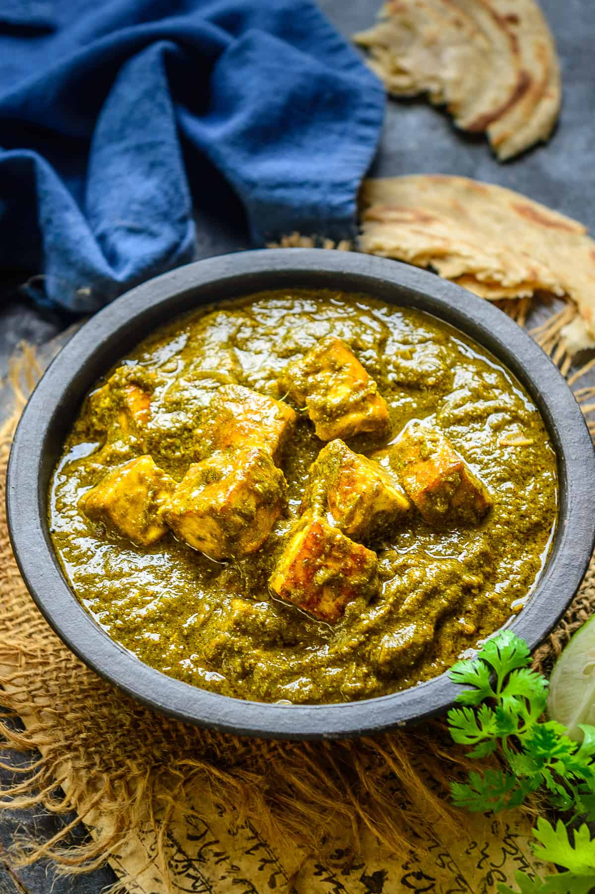

Saag Paneer

Description
Saag is a popular Punjabi gravy, where green leafy vegetables are pureed and then cooked along with a spicy Onion Tomato Masala.
If you like Palak Paneer, then you will definitely love this Creamy Saag Paneer or green goodness as I like to call it.
In this authentic Punjabi Paneer Recipe, the gravy is made of green leafy vegetables which are cooked along with tomato puree, onions, and everyday spices.
Once the gravy is cooked, crispy fried pieces of Paneer or Indian Cottage Cheese are added into this flavourful gravy which gives it a nice crunch and taste.
I like to make my Paneer pieces a little crispier than making it slightly golden brown. So if you like your Paneer crispy, pan fry it for a longer time on low heat, but make sure you don’t burn it.
Ingredients
To make the paste
- 2 cups Spinach/ Palak
- 1 cup Fenugreek/ Methi
- 1 cup Radish Greens/ Mooli ke Patte
- ½ cup Fresh Coriander/ Dhaniya
- 2 Green Chillies
For the gravy
- 4 tablespoon Mustard Oil
- 400 g Paneer (Cut into cubes)
- 3-4 Cloves
- 3-4 Black Peppercorns
- 2 Black Cardamom
- 1 inch Cinnamon Stick
- ½ cup Onion (Thinly Sliced)
- 4 tablespoon Tomato Puree
- ¼ cup Yogurt
- 2 teaspoon Coriander Powder
- ½ teaspoon Turmeric Powder
- 1 teaspoon Kashmiri Red Chilli Powder
- ½ teaspoon Roasted Cumin Powder
- Salt to taste
- 2 tablespoon Ghee
- 1 tablespoon Lemon Juice
- ½ teaspoon Garam Masala Powder
Steps
- Clean and wash the greens thoroughly under running water.
- Heat water in a large pot.
- When the water comes to a boil, add 2 tablespoon of salt and 1 teaspoon sugar to it.
- Add the washed greens and cook for 2 minutes.
- Remove from heat.
- Drain the water and run the greens under cold water.
- Drain nicely.
- Blend the greens in a blender to make a coarse paste.
- Keep aside.
- Heat mustard oil in a pan.
- Add paneer cubes on the pan and fry them until they are slightly browned.
home